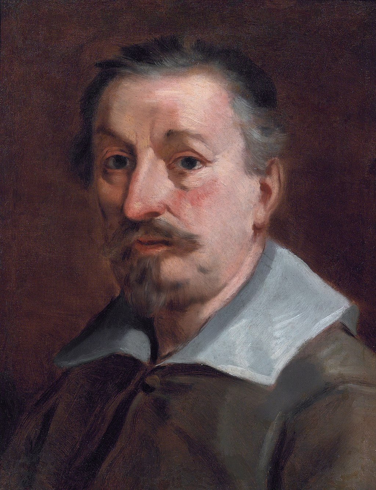

Opera di Francesco Albani
Artista: Francesco Albani
Data: fine XVII - inizio XVIII secolo
Luogo di conservazione (XVIII sec.): Convento dei Servi, Bologna
Tipo: Dipinto ad olio su tela
Descrizione: Opera documentata da Oretti nel manoscritto B110, raffigurante Venere e Adone. L’opera era conservata nel convento dei Servi e attribuita con sicurezza ad Albani, esponente della scuola bolognese barocca.